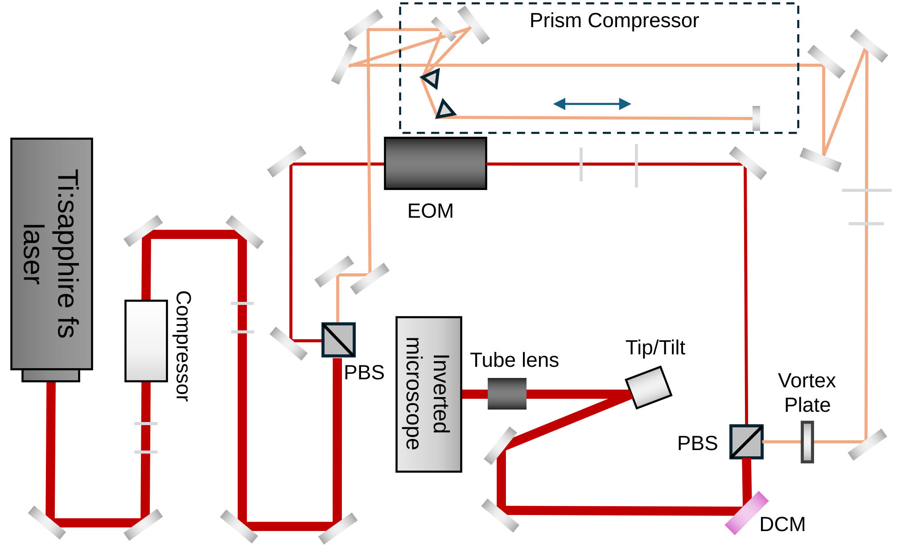
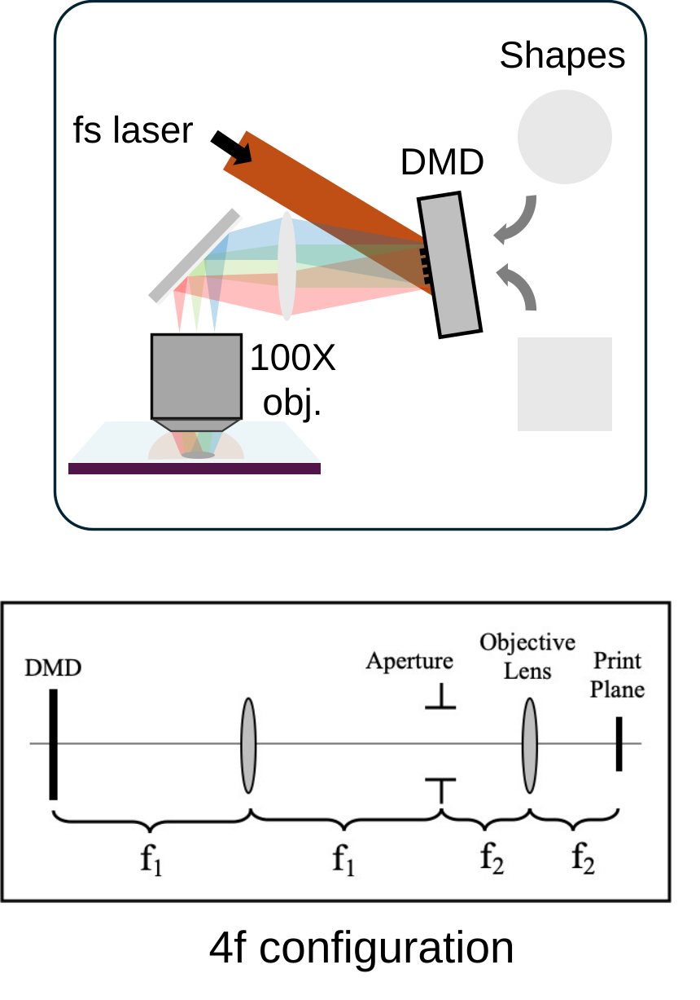
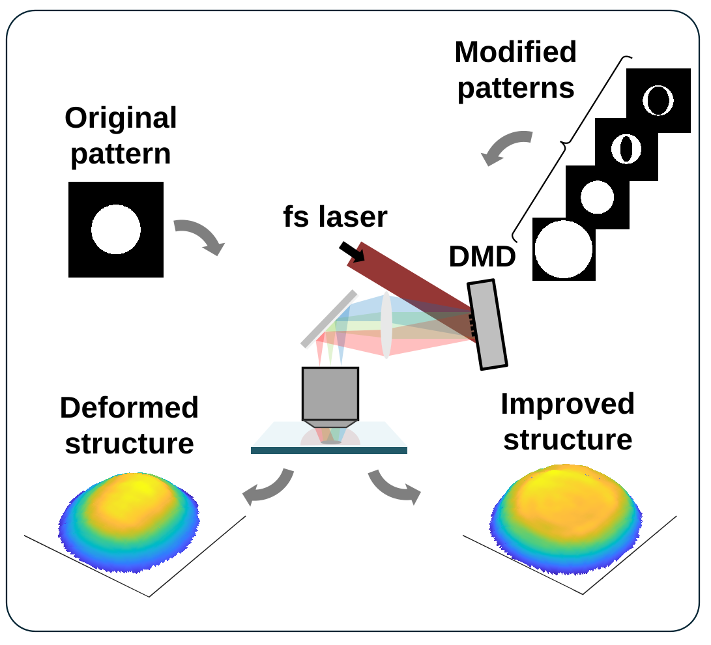

02 —
Research Projects
P.01
Dual-Laser 3D Printing for Efficient Nanofabrication
Invented a novel two-photon polymerization approach combining a cost-effective visible laser with a femtosecond infrared source, significantly reducing fabrication cost and laser power requirements for complex 3D microstructures.
- Reduced required femtosecond laser power by up to 50%, lowering the cost barrier for complex 3D microstructure fabrication.
- Built a custom dual-laser (fs + ns) 3D printing platform integrating pulse-compression optics, electro-optic modulation, a piezo-actuated tip/tilt mirror, and a five-axis positioning stage.
- Developed photochemical modeling and experimental validation to elucidate photopolymerization mechanisms and guide process optimization.
- Featured in Optica, Phys.org, Science Daily, Purdue ME News, and 3dprinting.com.

P.02
Single-Source Photoinhibition Lithography
Designed a single-color photoinhibition lithography system achieving greater than 20% resolution improvement and 65 nm linewidths — pushing nanofabrication toward the limits imposed by photophysics rather than optics.
- Implemented custom pulse stretching and a vortex-phase inhibition beam, achieving >20% resolution improvement over standard 2PP.
- Built a custom prism compressor to stretch femtosecond pulses into the picosecond regime for precise temporal control.
- Used a vortex phase plate to generate a doughnut-shaped inhibition beam, enabling sub-diffraction feature sizes down to 65 nm linewidths.
- Performed precise spatial alignment and power synchronization of excitation and inhibition beams at the print plane.

P.03
Geometric Accuracy in Projection Multiphoton Lithography
Enhancing DMD-based spatiotemporally focused projection lithography through optical modeling and secondary laser integration to improve geometric accuracy and layer uniformity at scale.
- Modeled optical field propagation and photochemical kinetics in MATLAB to identify root causes of geometric distortions.
- Developed compensation strategies achieving mean absolute error within 150 nm across printed structures.
- Integrated secondary laser modulation to improve layer uniformity in projection-based 2PP systems.

